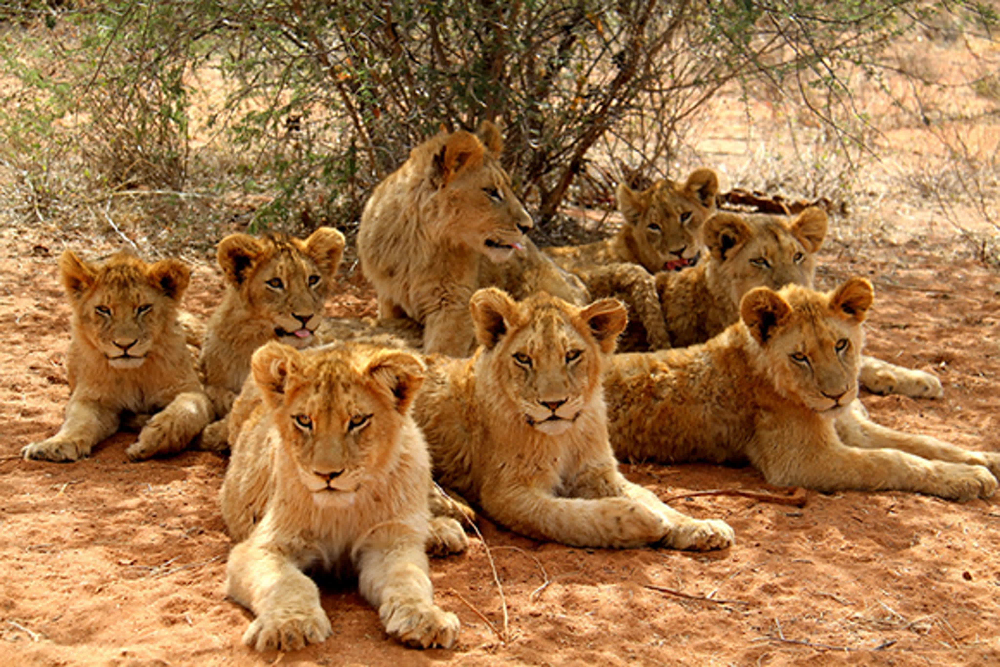
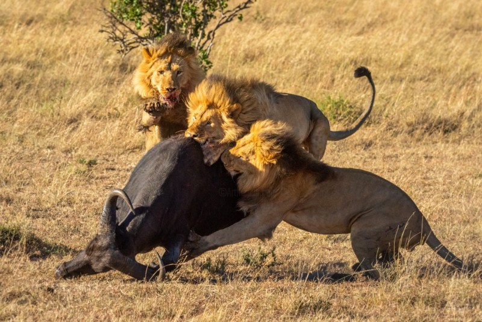
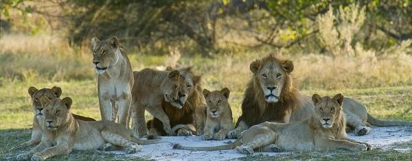

СОЦІАЛЬНА ПОВЕДІНКА І СПОСІБ ЖИТТЯ

- Прайди: Африканські леви є найбільш соціальними з усіх великих котів і живуть разом у групах або
“прайдах”. До прайду входить близько 15 левів.
- Ролі в прайді: Самці левів захищають територію прайду, в той час як самки виконують більшу частину
полювання. Незважаючи на це, самці їдять першими.
- Леви відомі як найлінивіші з усіх великих котів, проводячи від 21 до 22 годин на добу уві сні,
відпочинку та простому сидінні.
- Рев лева можна почути на відстані до 8 км. Усі леви у прайді зазвичай ревуть разом, щоб позначити
свою територію.
ФІЗИЧНІ ХАРАКТЕРИСТИКИ

- Самці і самки левів виглядають по-різному. Дорослі самці відрощують вражаючу гриву, яка слугує
захистом і знаком домінування.
- Лев може бігати на короткі відстані зі швидкістю 80 км/год і стрибати на відстань до 11 метрів.
- Лев має надзвичайно гострі кігті, які можуть виростати до 38 см, а його паща може роззявлятися до
28 см.
СЕРЕДОВИЩЕ ІСНУВАННЯ ТА ПОШИРЕННЯ

- Хоча лева іноді називають “королем
джунглів”, насправді він живе лише
на луках і
рівнинах..
- Колись лев водився по всій Африці, Азії та Європі, але зараз існує лише в Африці, за одним
винятком. Останні азійські леви, що залишилися, мешкають у національному парку Сасан-Гір в Індії.
ХАРЧУВАННЯ ТА ПОЛЮВАННЯ

- Хижацька дієта: леви можуть з’їсти 40 кг м’яса за один раз, полюючи на інших наземних ссавців,
таких як зебри, антилопи і дикі свині.
- Стратегія полювання: самки левів є основними мисливцями прайду. Вони полюють групами, де слабші
левиці виконують роль пастушок, а сильніші йдуть на здобич.
РОЗМНОЖЕННЯ ТА ВИХОВАННЯ

- Полігамна природа: у дикій природі леви розмножуються раз на два роки, а в неволі – щороку. І
самці, і самки спаровуються з кількома партнерами.
- Левенята виховуються спільно. Самки левів та їхні левенята складають більшу частину прайду, і
самки спільними зусиллями вигодовують своїх дитинчат.
ОХОРОНА І ЗАГРОЗИ ІСНУВАННЯ
- Вразливий статус: цим величним котам загрожує втрата середовищ існування, і вони занесені до
Червоного списку видів, що перебувають під загрозою зникнення, Міжнародного союзу охорони природи.
- За останні три покоління чисельність африканських левів скоротилася більш ніж на 40%. Популяція
левів неухильно скорочується вже понад три десятиліття.
- Люди незаконно добувають левові кістки як ліки, а трофейне полювання спрямоване на найздоровіших і
найбільших самців, що становить значну загрозу їхньому виживанню.